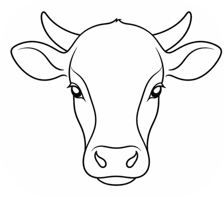

Juntos en la tierra, juntos en el negocio.
YUSBO es una red social para ganaderos y personas del campo. Inicia sesión con Facebook o con tu correo, publica lo que ofreces u explora publicaciones, negocia de forma directa a través de los mensajes y coordina la entrega con total confianza.
Gratis para leer y publicar · Funciones exclusivas con suscripción
Todo lo que el ganadero necesita en un solo lugar: publicar, negociar, vender y gestionar su negocio con la ayuda de la tecnología.
Publica y explora anuncios de ganado, maíz y más. Encuentra exactamente lo que buscas.
Contacta a quien quieras comprarle, negocia el precio y pónganse de acuerdo sin salir de la app.
Anuncia tu negocio y da más alcance a tus publicaciones para llegar a más personas.
Sistema de gestión y conteo de ganado: ganancias, egresos, comida, agua y cultivos en un solo panel.
Asistencia de IA integrada para granjas y entornos industriales que agiliza tu día a día.
Espacios publicitarios para que tu mensaje llegue a toda la comunidad del campo.
Publicita dentro de la misma red social tu publicación y haz que más ganaderos y compradores la vean primero.
Promocionar mi publicaciónCualquier empresa puede anunciarse en los espacios de YUSBO y conectar con nuestra comunidad, aunque su negocio no tenga que ver con el ganado.
Anunciar mi empresaLleva tu negocio al siguiente nivel. Con la suscripción obtienes beneficios exclusivos para gestionar mejor tu cultivo o tu granja.
Porque es la forma más sencilla de vender y comprar ganado. Al publicar, tu oferta llega a más personas del campo, así que aumentan tus posibilidades de cerrar un buen trato.
Sí. Leer y publicar es totalmente gratis. contamos con funciones adicionales para las cuales se requiere una suscripción.
Crea tu cuenta, publica lo que ofreces o explora los anuncios. Contacta al interesado por mensajería directa, acuerden los términos y realicen la entrega en persona.
Usa los mensajes directos de la aplicación. Ahí podrás negociar, preguntar detalles y ponerse de acuerdo sobre la compra y la entrega.
Puedes entrar con tu correo, con Google o con Facebook. Solo creas tu cuenta y ya puedes publicar y explorar.
Quita los anuncios y te da acceso al kit de herramientas y a las IA avanzadas para gestionar tu cultivo o tu granja.
La acuerdan ustedes por mensajería directa y la entrega se hace en persona, donde mejor les convenga a ambas partes.
Sí. Puedes promocionar tus publicaciones dentro de la red social o anunciar tu empresa en los espacios publicitarios de YUSBO.
Te ayuda a gestionar tu granja o cultivo: conteo de ganado, ganancias, egresos, comida, agua y mucho más en un solo panel, ademas de darte planes detallados para objetivos como: tener mas crias.
Claro. YUSBO se adapta a computadora, tablet y celular, para que la uses desde donde estés.
¿Tienes dudas con tu cuenta, una publicación o una negociación? Nuestro equipo está listo para acompañarte en cada paso.
Contactar soporte